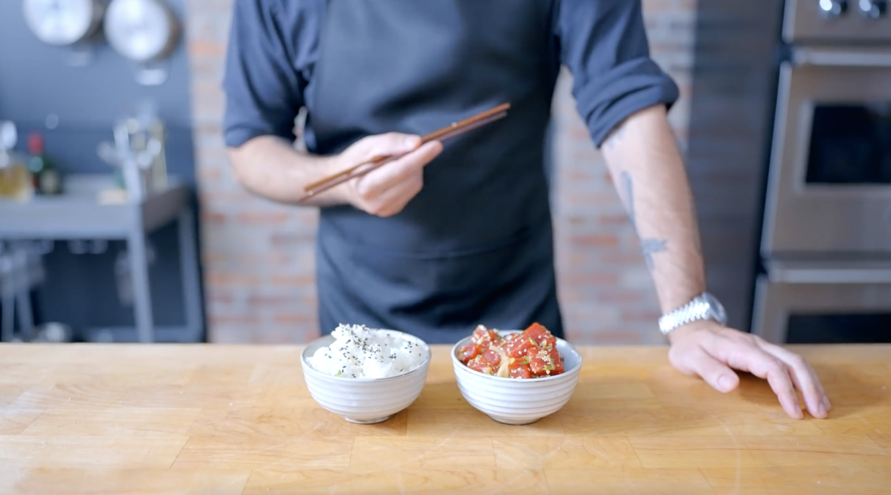

Poke Bowls

Description
Poke Bowls: for those rare occasions when your lunch actually tastes just as delicious as it looks on your feed.
Ingredients
- 1/2 Cup rice
- 3/4 Cup water
- 1 tsp rice wine vinegar
- 1 tsp fresh giner, grated
- 1 1/2 Tbsp shoyu or soy sauce
- 1/2 Tbsp ponzu sauce
- 1/2 Tbsp sesame oil
- 1/2 tsp kosher salt
- 1/4 tsp goshugaru or crushed red pepper flakes
- 12 oz sushi grade salmon, cubed
- 1/2 Cup cucumber, sliced
- 1/2 ripe avocado, sliced or cubed
- 1/4 Cup nori strips
- Tenkasu
- Spice mayo sauce
Steps
Sushi Rice
- Rinse the rice until the water runs clear. Soak the rice in cold water for 30 minutes, then drain.
- Add the water and rinsed rice to the rice cooker.
- Cook using the rice setting on the machine.
- Add the cooked rice to a bowl and season with rice vinegar. This will also prevent the rice from sticking together.
- Allow the rice to cool to room temperature.
Salmon Poke Bowl
- Combine the ginger, shoyu, ponzu, sesame oil, salt, and gochugaru in a small bowl. Whisk to combine the marinade.
- Add the salmon to the marinade and fold to combine. Cover the bowl tightly with plastic wrap or a plate, and refrigerate for 1-2 hours.
- Serve the poke over the room temperature rice. Garnish with cucumber, avocado, nori, tenkasu, and mayo sauce.